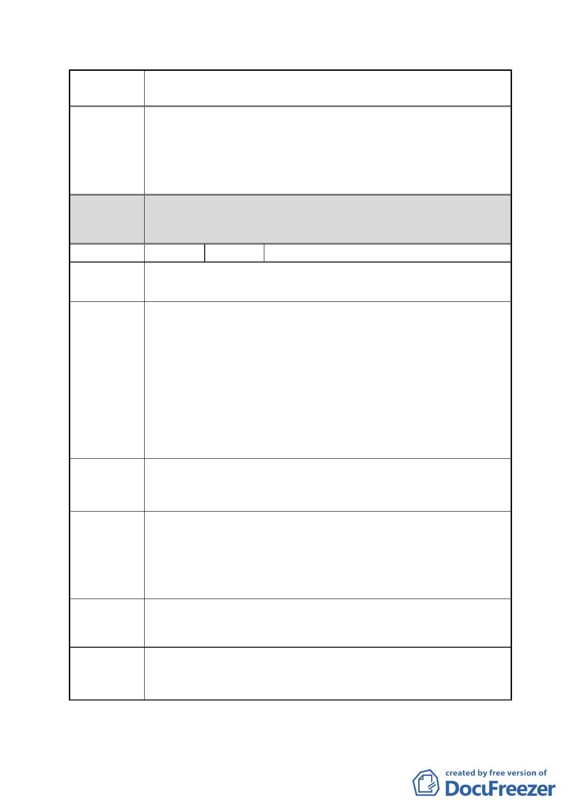

案 名 擬定臺北市南港區鐵路地下化沿線土地細部計畫案
都委會
決議
節與台鐵局、新北市政府協議中，已大致獲得共識，後續
將簽訂協議書。
2. 有關臺鐵局建議將其管有之南港調車廠劃為更新地區 1
節，考量本案係指標性更新案件之ㄧ，故本案主要計畫業
將本案計畫範圍全部劃設為更新地區。
1.本陳情地點非屬修正後細部計畫範圍。
2.同意以市府回應說明 1 辦理。
編號
5 陳情人 國產實業建設股份有限公司
陳情地點 南港區玉成段二小段 164 地號
本公司現有廠房建築完成已達五十六年，符合「都市更新條
例」第六條及第七條有關優先或迅行劃定更新地區之原則，
且建築基地亦符合「台北市都市更新自治條例」第十二條所
定更新單元劃定基準。惟細部計畫僅規範「本計畫範圍內未
陳情理由 1 變更分區及未參與重劃者劃設為更新地區…」，其餘土地未納
入更新地區。倘本公司因配合政府重大政策卻無法於廠房拆
除前取得適用都市更新之資格，所蒙損失極為鉅大，諒與政
府為活絡南港區土地利用、促進民間產業發展而披星戴月之
初衷或有未符。
建請援用「都市更新條例」第八條、第九條及相關規定，於
建議辦法 1 細部計畫指定本基地為更新地區暨更新單元，並准由土地所
有權人或其指定之第三人擔任實施者以實施都市更新事業。
本區長期以來發展遲緩，蒙政府德政得以參與南港區鐵路地
下化後重新開發之歷史契機。惟至完成市地重劃尚需二至三
陳情理由 2 年時間，如能對配合開發者提供額外容積獎勵之誘因，除具
有衡平私有產權之積極意義，亦能加速打造新南港意象，創
造政府與民間雙贏局面。
建請比照新板橋車站特定專用區、台北大學特定區等都市計
建議辦法 2 畫之規定，於細部計畫增列開發時程獎勵。
本公司與台鐵調車場位處同一開發街廓，計畫範圍內尚有台
陳情理由 3 電、中華電信所管用之大型公用設施，其遷移時程變數仍多，
如有延宕亦將影響其他地主之開發利用而無救濟管道。
- 19 -